Trong đó các mạng nơ-ron sâu thực hiện nhiều tác vụ ngôn ngữ khác nhau, nắm bắt cấu trúc của ngôn ngữ tự nhiên cũng như tính trôi chảy của nó.
Chương 24 đã giải thích các yếu tố then chốt của ngôn ngữ tự nhiên, bao gồm ngữ pháp và ngữ nghĩa. Các hệ thống dựa trên phân tích cú pháp và phân tích ngữ nghĩa đã chứng minh sự thành công trên nhiều tác vụ, nhưng hiệu suất của chúng bị giới hạn bởi sự phức tạp vô tận của các hiện tượng ngôn ngữ trong văn bản thực tế. Với lượng lớn văn bản có sẵn ở định dạng máy đọc được, thật hợp lý khi xem xét liệu các phương pháp tiếp cận dựa trên học máy (machine learning) dẫn dắt bởi dữ liệu có thể hiệu quả hơn hay không. Chúng ta khám phá giả thuyết này bằng cách sử dụng các công cụ được cung cấp bởi các hệ thống học sâu (Chương 22).
Chúng ta bắt đầu trong Mục 25.1 bằng cách chỉ ra cách việc học có thể được cải thiện bằng cách biểu diễn các từ dưới dạng các điểm trong một không gian nhiều chiều, thay vì dưới dạng các giá trị nguyên tử (atomic values). Mục 25.2 trình bày việc sử dụng các mạng nơ-ron hồi quy (recurrent neural networks) để nắm bắt ý nghĩa và ngữ cảnh khoảng cách xa khi văn bản được xử lý tuần tự. Mục 25.3 tập trung chủ yếu vào dịch máy (machine translation), một trong những thành công lớn nhất của học sâu áp dụng cho NLP. Các mục 25.4 và 25.5 trình bày các mô hình có thể được huấn luyện từ lượng lớn văn bản chưa gán nhãn và sau đó áp dụng cho các tác vụ cụ thể, thường đạt được hiệu suất tiên tiến nhất (state-of-the-art). Cuối cùng, Mục 25.6 xem xét lại vị trí hiện tại của chúng ta và cách lĩnh vực này có thể phát triển.
Chúng ta muốn có một biểu diễn của các từ không yêu cầu trích xuất đặc trưng thủ công (manual feature engineering), nhưng cho phép tổng quát hóa giữa các từ liên quan—những từ liên quan về mặt cú pháp (“colorless” và “ideal” đều là tính từ), về mặt ngữ nghĩa (“cat” và “kitten” đều là động vật họ mèo), về mặt chủ đề (“sunny” và “sleet” đều là các thuật ngữ thời tiết), về mặt cảm xúc (“awesome” có cảm xúc trái ngược với “cringeworthy”), hoặc các mặt khác.
Làm thế nào chúng ta nên mã hóa một từ thành một vectơ đầu vào \(\mathbf{x}\) để sử dụng trong một mạng nơ-ron? Như đã giải thích trong Mục 22.2.1, chúng ta có thể sử dụng một vectơ one-hot—nghĩa là, chúng ta mã hóa từ thứ \(i\) trong từ điển với một bit 1 ở vị trí đầu vào thứ \(i\) và 0 ở tất cả các vị trí khác. Nhưng một biểu diễn như vậy sẽ không nắm bắt được sự tương đồng giữa các từ.
Theo châm ngôn của nhà ngôn ngữ học John R. Firth (1957), “Bạn sẽ biết một từ nhờ những từ đi kèm với nó” (“You shall know a word by the company it keeps”), chúng ta có thể biểu diễn mỗi từ bằng một vectơ đếm n-gram của tất cả các cụm từ mà từ đó xuất hiện. Tuy nhiên, số đếm n-gram thô rất cồng kềnh. Với một từ vựng gồm 100.000 từ, có tới \(10^{25}\) 5-grams để theo dõi (mặc dù các vectơ trong không gian \(10^{25}\) chiều này sẽ khá thưa—hầu hết các số đếm sẽ bằng không). Chúng ta sẽ có được sự tổng quát hóa tốt hơn nếu chúng ta giảm điều này xuống một vectơ kích thước nhỏ hơn, có lẽ chỉ với vài trăm chiều. Chúng ta gọi vectơ dày đặc, nhỏ hơn này là một nhúng từ (word embedding): một vectơ số chiều thấp biểu diễn một từ. Các nhúng từ được học tự động từ dữ liệu. (Chúng ta sẽ xem cách thực hiện điều này sau.) Những nhúng từ được học này trông như thế nào? Một mặt, mỗi nhúng chỉ là một vectơ các con số, trong đó các chiều riêng lẻ và giá trị số của chúng không có ý nghĩa rõ ràng:
“aardvark” = \([-0.7, +0.2, -3.2, ...]\)
“abacus” = \([+0.5, +0.9, -1.3, ...]\)
···
“zyzzyva” = \([-0.1, +0.8, -0.4, ...]\)
Mặt khác, không gian đặc trưng có thuộc tính là các từ tương tự nhau sẽ có các vectơ tương tự nhau. Chúng ta có thể thấy điều đó trong
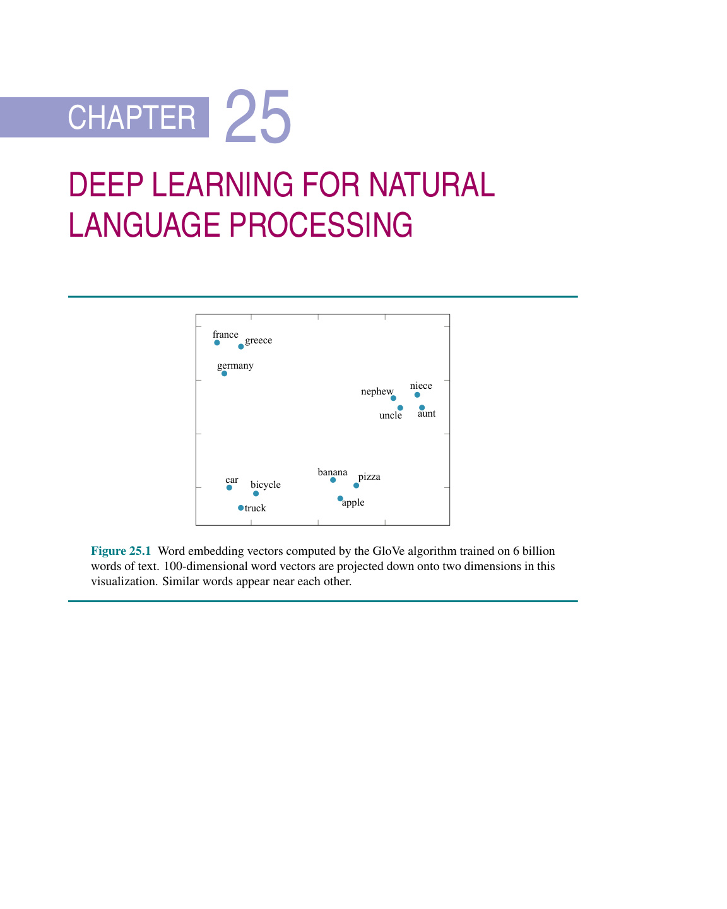
Hóa ra, vì những lý do mà chúng ta chưa hoàn toàn hiểu rõ, các vectơ nhúng từ có các thuộc tính bổ sung ngoài sự gần gũi đơn thuần đối với các từ tương tự. Ví dụ, giả sử chúng ta xem xét các vectơ \(A\) cho Athens và \(B\) cho Greece (Hy Lạp). Đối với những từ này, sự khác biệt vectơ \(B - A\) dường như mã hóa mối quan hệ quốc gia/thủ đô. Các cặp khác—Pháp và Paris, Nga và Moscow, Zambia và Lusaka—về cơ bản có cùng một sự khác biệt vectơ.
Chúng ta có thể sử dụng thuộc tính này để giải quyết các vấn đề tương tự từ (word analogy) chẳng hạn như “Athens đối với Greece cũng như Oslo đối với [cái gì]?” Viết \(C\) cho vectơ của Oslo và \(D\) cho ẩn số, chúng ta đưa ra giả thuyết rằng \(B - A = D - C\), cho ta \(D = C + (B - A)\). Và khi chúng ta tính toán vectơ \(D\) mới này, chúng ta thấy rằng nó gần với “Norway” (Na Uy) hơn bất kỳ từ nào khác.
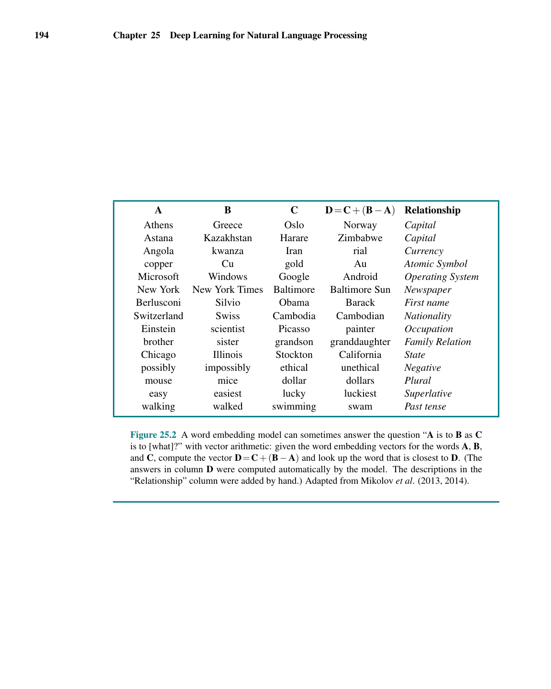
Tuy nhiên, không có sự đảm bảo nào rằng một thuật toán nhúng từ cụ thể chạy trên một kho ngữ liệu (corpus) cụ thể sẽ nắm bắt được một mối quan hệ ngữ nghĩa cụ thể. Nhúng từ phổ biến vì chúng đã được chứng minh là một biểu diễn tốt cho các tác vụ ngôn ngữ ở phần sau (downstream language tasks) (chẳng hạn như trả lời câu hỏi, dịch thuật hoặc tóm tắt), chứ không phải vì chúng được đảm bảo có thể tự trả lời các câu hỏi loại suy.
Việc sử dụng các vectơ nhúng từ thay vì mã hóa one-hot của các từ hóa ra lại rất hữu ích cho gần như tất cả các ứng dụng của học sâu đối với các tác vụ NLP. Thật vậy, trong nhiều trường hợp, có thể sử dụng các vectơ được huấn luyện trước (pretrained vectors) chung chung, lấy từ bất kỳ nhà cung cấp nào, cho tác vụ NLP cụ thể của riêng mình. Tại thời điểm viết bài, các từ điển vectơ thường được sử dụng bao gồm WORD2VEC, GloVe (Global Vectors) và FASTTEXT, có nhúng từ cho 157 ngôn ngữ. Việc sử dụng một mô hình được huấn luyện trước có thể tiết kiệm rất nhiều thời gian và công sức. Để biết thêm về các tài nguyên này, xem Mục 25.5.1.
Cũng có thể tự huấn luyện các vectơ từ của riêng bạn; điều này thường được thực hiện cùng lúc với việc huấn luyện một mạng cho một tác vụ cụ thể. Khác với các nhúng được huấn luyện trước chung chung, các nhúng từ được tạo ra cho một tác vụ cụ thể có thể được huấn luyện trên một kho ngữ liệu được chọn lựa cẩn thận và sẽ có xu hướng nhấn mạnh các khía cạnh của từ hữu ích cho tác vụ đó. Giả sử, ví dụ, tác vụ là gán nhãn từ loại (POS tagging) (xem Mục 24.1.6). Hãy nhớ lại rằng điều này liên quan đến việc dự đoán đúng từ loại cho mỗi từ trong một câu. Mặc dù đây là một tác vụ đơn giản, nó không hề tầm thường vì nhiều từ có thể được gán nhãn theo nhiều cách—ví dụ, từ "cut" có thể là một động từ thời hiện tại (ngoại động từ hoặc nội động từ), một động từ thời quá khứ, một động từ nguyên thể, một phân từ quá khứ, một tính từ hoặc một danh từ. Nếu một trạng từ chỉ thời gian gần đó chỉ về quá khứ, điều đó
Hình 25.1 Các vectơ nhúng từ được tính toán bởi thuật toán GloVe được huấn luyện trên 6 tỷ từ của văn bản. Các vectơ từ 100 chiều được chiếu xuống không gian 2 chiều trong hình ảnh trực quan này. Các từ tương tự xuất hiện gần nhau.
Hình 25.2 Một mô hình nhúng từ đôi khi có thể trả lời câu hỏi “A đối với B cũng như C đối với [cái gì]?” bằng số học vectơ: với các vectơ nhúng từ cho các từ A, B, và C, tính toán vectơ \(D = C + (B - A)\) và tìm từ gần nhất với D. (Các câu trả lời ở cột D được tính toán tự động bởi mô hình. Các mô tả trong cột "Relationship" (Mối quan hệ) được thêm thủ công.) Cải biên từ Mikolov et al. (2013, 2014).
cho thấy sự xuất hiện cụ thể này của "cut" là một động từ thời quá khứ; và sau đó, chúng ta có thể hy vọng rằng các vectơ nhúng sẽ nắm bắt được khía cạnh tham chiếu quá khứ của các trạng từ.
Gán nhãn POS (từ loại) đóng vai trò là một ví dụ giới thiệu tốt về ứng dụng của học sâu đối với NLP, mà không có sự phức tạp của các tác vụ khó hơn như trả lời câu hỏi (xem Mục 25.5.3). Cho trước một kho ngữ liệu gồm các câu đã được gán nhãn POS, chúng ta học các tham số cho nhúng từ và bộ gán nhãn POS đồng thời. Quá trình này hoạt động như sau:
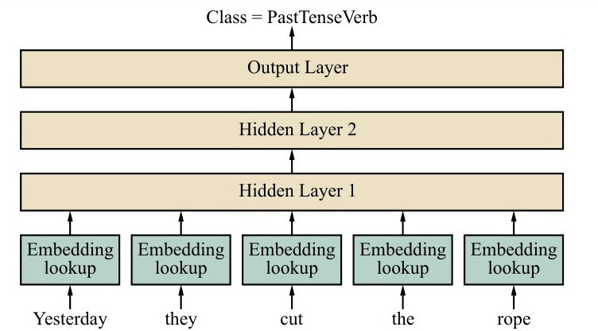
\(\mathbf{z}_1 = \sigma(\mathbf{W}_1 \mathbf{x})\)
\(\mathbf{z}_2 = \sigma(\mathbf{W}_2 \mathbf{z}_1)\)
\(\mathbf{\hat{y}} = \text{softmax}(\mathbf{W}_{\text{out}} \mathbf{z}_2)\).
Một giải pháp thay thế cho các nhúng từ là mô hình cấp độ ký tự (character-level model), trong đó đầu vào là một chuỗi các ký tự, mỗi ký tự được mã hóa dưới dạng một vectơ one-hot. Một mô hình như vậy phải học cách các ký tự kết hợp với nhau để tạo thành từ. Phần lớn công việc trong NLP vẫn gắn liền với việc mã hóa ở cấp độ từ thay vì cấp độ ký tự.
Chúng ta hiện đã có một biểu diễn tốt cho các từ đơn lẻ độc lập, nhưng ngôn ngữ bao gồm một chuỗi các từ có thứ tự, trong đó ngữ cảnh của các từ xung quanh rất quan trọng. Đối với các tác vụ đơn giản như gán nhãn từ loại, một cửa sổ kích thước nhỏ và cố định gồm khoảng năm từ thường cung cấp đủ ngữ cảnh.
Các tác vụ phức tạp hơn như trả lời câu hỏi hoặc giải quyết tham chiếu (reference resolution) có thể cần hàng chục từ làm ngữ cảnh. Ví dụ, trong câu “Eduardo told me that Miguel was very sick so I took him to the hospital” (Eduardo nói với tôi rằng Miguel đang ốm nặng nên tôi đã đưa anh ấy đến bệnh viện), việc biết rằng "him" (anh ấy) đề cập đến Miguel chứ không phải Eduardo đòi hỏi ngữ cảnh kéo dài từ từ đầu tiên đến từ cuối cùng của câu gồm 14 từ.
Chúng ta sẽ bắt đầu với vấn đề tạo ra một mô hình ngôn ngữ với ngữ cảnh đủ lớn. Hãy nhớ lại rằng mô hình ngôn ngữ là một phân phối xác suất trên các chuỗi từ. Nó cho phép chúng ta dự đoán từ tiếp theo trong một văn bản dựa trên tất cả các từ trước đó, và thường được sử dụng như một khối xây dựng (building block) cho các tác vụ phức tạp hơn.
Việc xây dựng một mô hình ngôn ngữ với mô hình n-gram (như ở Mục 24.1) hoặc một mạng truyền thẳng (feedforward network) với cửa sổ cố định gồm \(n\) từ có thể gặp khó khăn do vấn đề về ngữ cảnh: ngữ cảnh bắt buộc sẽ vượt quá kích thước cửa sổ cố định hoặc mô hình sẽ có quá nhiều tham số, hoặc cả hai.
Ngoài ra, mạng truyền thẳng còn có vấn đề về sự bất đối xứng: bất cứ điều gì nó học được, giả sử, về sự xuất hiện của từ "him" là từ thứ 12 của câu, nó sẽ phải học lại cho sự xuất hiện của "him" ở các vị trí khác trong câu, vì các trọng số là khác nhau đối với mỗi vị trí từ.
Trong Mục 22.6, chúng ta đã giới thiệu mạng nơ-ron hồi quy hay RNN (recurrent neural network), được thiết kế để xử lý dữ liệu chuỗi thời gian, từng dữ liệu một. Điều này gợi ý rằng RNN có thể hữu ích cho việc xử lý ngôn ngữ, từng từ một. Chúng ta lặp lại Hình 22.8 ở đây dưới dạng
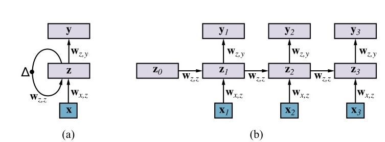
Trong một mô hình ngôn ngữ RNN, mỗi từ đầu vào được mã hóa dưới dạng một vectơ nhúng từ, \(\mathbf{x}_t\). Có một lớp ẩn \(\mathbf{z}_t\) được truyền làm đầu vào từ bước thời gian này sang bước thời gian tiếp theo. Chúng ta quan tâm đến việc thực hiện phân loại đa lớp (multiclass classification): các lớp là các từ trong từ vựng. Do đó, đầu ra \(\mathbf{y}_t\) sẽ là một phân phối xác suất softmax trên các giá trị có thể có của từ tiếp theo trong câu.
Kiến trúc RNN giải quyết vấn đề có quá nhiều tham số. Số lượng tham số trong các ma trận trọng số \(\mathbf{W}_{z,z}\), \(\mathbf{W}_{x,z}\), và \(\mathbf{W}_{z,y}\) không đổi, bất kể số lượng từ là bao nhiêu—nó là \(O(1)\). Điều này trái ngược với mạng truyền thẳng, vốn có \(O(n)\) tham số, và các mô hình n-gram, vốn có \(O(v^n)\) tham số, trong đó \(v\) là kích thước của từ vựng.
Kiến trúc RNN cũng giải quyết vấn đề về sự bất đối xứng, vì các trọng số giống nhau cho mọi vị trí từ.
Kiến trúc RNN đôi khi cũng có thể giải quyết vấn đề giới hạn ngữ cảnh. Về mặt lý thuyết, không có giới hạn về việc mô hình có thể nhìn lại quá khứ bao xa ở đầu vào. Mỗi lần cập nhật lớp ẩn \(\mathbf{z}_t\) đều có quyền truy cập vào cả từ đầu vào hiện tại \(\mathbf{x}_t\) và lớp ẩn trước đó \(\mathbf{z}_{t-1}\), điều đó có nghĩa là thông tin về bất kỳ từ nào trong đầu vào đều có thể được giữ trong lớp ẩn vô thời hạn, được sao chép (hoặc sửa đổi cho phù hợp) từ một bước thời gian sang bước thời gian tiếp theo. Tất nhiên, không gian lưu trữ trong \(\mathbf{z}\) có hạn, do đó nó không thể ghi nhớ mọi thứ về tất cả các từ trước đó.
Trong thực tế, các mô hình RNN hoạt động tốt trên nhiều tác vụ khác nhau, nhưng không phải trên tất cả các tác vụ. Rất khó để dự đoán liệu chúng có thành công cho một vấn đề cụ thể hay không. Một yếu tố đóng góp vào sự thành công là quá trình huấn luyện khuyến khích mạng phân bổ không gian lưu trữ trong \(\mathbf{z}\) cho các khía cạnh của đầu vào sẽ thực sự chứng minh được tính hữu ích.
Để huấn luyện một mô hình ngôn ngữ RNN, chúng ta sử dụng quá trình huấn luyện được mô tả trong Mục 22.6.1. Các đầu vào, \(\mathbf{x}_t\), là các từ trong một kho ngữ liệu huấn luyện văn bản và các đầu ra được quan sát cũng chính là các từ đó, nhưng được dịch chuyển.
Hình 25.3 Mô hình truyền thẳng gán nhãn từ loại (Feedforward part-of-speech tagging model). Mô hình này lấy một cửa sổ gồm 5 từ làm đầu vào và dự đoán nhãn của từ ở giữa—ở đây là từ "cut". Mô hình có khả năng giải thích vị trí của từ bởi vì mỗi nhúng từ trong 5 đầu vào được nhân với một phần khác nhau của lớp ẩn đầu tiên. Các giá trị tham số cho các nhúng từ và cho ba lớp đều được học đồng thời trong quá trình huấn luyện.
Hình 25.4 (a) Sơ đồ giản lược của một RNN trong đó lớp ẩn \(\mathbf{z}\) có các kết nối hồi quy; ký hiệu \(\Delta\) biểu thị sự trì hoãn (delay). Mỗi đầu vào \(\mathbf{x}\) là vectơ nhúng từ của từ tiếp theo trong câu. Mỗi đầu ra \(\mathbf{y}\) là đầu ra cho bước thời gian đó. (b) Cùng một mạng nhưng được trải ra (unrolled) qua ba bước thời gian để tạo ra một mạng truyền thẳng. Lưu ý rằng các trọng số được chia sẻ trên tất cả các bước thời gian.
các từ bù trừ nhau 1 vị trí. Nghĩa là, đối với văn bản huấn luyện “hello world”, đầu vào đầu tiên \(\mathbf{x}_1\) là nhúng từ cho “hello” và đầu ra đầu tiên \(\mathbf{y}_1\) là nhúng từ cho “world”. Chúng ta đang huấn luyện mô hình để dự đoán từ tiếp theo, và kỳ vọng rằng để làm như vậy, nó sẽ sử dụng lớp ẩn để biểu diễn thông tin hữu ích. Như đã giải thích trong Mục 22.6.1, chúng ta tính toán sự khác biệt giữa đầu ra được quan sát và đầu ra thực tế được tính toán bởi mạng, và lan truyền ngược qua thời gian (back-propagate through time), chú ý giữ cho các trọng số giống nhau đối với tất cả các bước thời gian.
Một khi mô hình đã được huấn luyện, chúng ta có thể sử dụng nó để sinh văn bản ngẫu nhiên. Chúng ta cung cấp cho mô hình một từ đầu vào ban đầu \(\mathbf{x}_1\), từ đó nó sẽ tạo ra một đầu ra \(\mathbf{y}_1\) là một phân phối xác suất softmax trên các từ. Chúng ta lấy mẫu (sample) một từ duy nhất từ phân phối, ghi lại từ đó làm đầu ra cho thời điểm \(t\), và đưa nó quay lại làm từ đầu vào tiếp theo \(\mathbf{x}_2\). Chúng ta lặp lại quá trình này miễn là mong muốn. Khi lấy mẫu từ \(\mathbf{y}_1\), chúng ta có một sự lựa chọn: chúng ta luôn có thể chọn từ có khả năng xảy ra cao nhất; chúng ta có thể lấy mẫu theo xác suất của mỗi từ; hoặc chúng ta có thể lấy mẫu vượt mức (oversample) các từ ít có khả năng xảy ra hơn, để đưa thêm sự đa dạng vào đầu ra được sinh ra. Trọng số lấy mẫu là một siêu tham số (hyperparameter) của mô hình.
Dưới đây là một ví dụ về văn bản ngẫu nhiên được sinh ra bởi một mô hình RNN được huấn luyện trên các tác phẩm của Shakespeare (Karpathy, 2015):
Marry, and will, my lord, to weep in such a one were prettiest;
Yet now I was adopted heir
Of the world’s lamentable day,
To watch the next way with his father with his face?
Cũng có thể sử dụng RNN cho các tác vụ ngôn ngữ khác, chẳng hạn như gán nhãn từ loại hoặc giải quyết đồng tham chiếu (coreference resolution). Trong cả hai trường hợp, các lớp đầu vào và lớp ẩn sẽ giống nhau, nhưng đối với bộ gán nhãn POS, đầu ra sẽ là một phân phối softmax trên các nhãn POS, và đối với giải quyết đồng tham chiếu, nó sẽ là một phân phối softmax trên các tiền ngữ (antecedents) có thể có. Ví dụ, khi mạng đến đầu vào "him" trong câu “Eduardo told me that Miguel was very sick so I took him to the hospital”, nó sẽ xuất ra một xác suất cao cho “Miguel”.
Việc huấn luyện một RNN để thực hiện phân loại như thế này được thực hiện theo cùng một cách với mô hình ngôn ngữ. Sự khác biệt duy nhất là dữ liệu huấn luyện sẽ yêu cầu các nhãn—nhãn từ loại hoặc chỉ báo tham chiếu. Điều đó làm cho việc thu thập dữ liệu khó hơn nhiều so với trường hợp của một mô hình ngôn ngữ, nơi mà văn bản chưa được gán nhãn là tất cả những gì chúng ta cần.
Trong một mô hình ngôn ngữ, chúng ta muốn dự đoán từ thứ \(n\) dựa trên các từ trước đó. Nhưng đối với phân loại, không có lý do gì chúng ta phải giới hạn bản thân chỉ nhìn vào các từ trước đó. Việc nhìn xa hơn (look ahead) trong câu có thể rất hữu ích. Trong ví dụ về đồng tham chiếu của chúng ta, người được nhắc tới (referent) "him" sẽ khác nếu câu kết luận bằng “to see Miguel” thay vì “to the hospital”, do đó việc nhìn xa hơn là rất quan trọng. Chúng ta biết từ các thí nghiệm theo dõi mắt rằng người đọc là con người không đọc hoàn toàn từ trái sang phải một cách nghiêm ngặt.
Để nắm bắt ngữ cảnh ở bên phải, chúng ta có thể sử dụng một RNN hai chiều (bidirectional RNN), nó kết nối một mô hình phải-sang-trái riêng biệt vào mô hình trái-sang-phải. Một ví dụ về việc sử dụng RNN hai chiều để gán nhãn POS được thể hiện trong
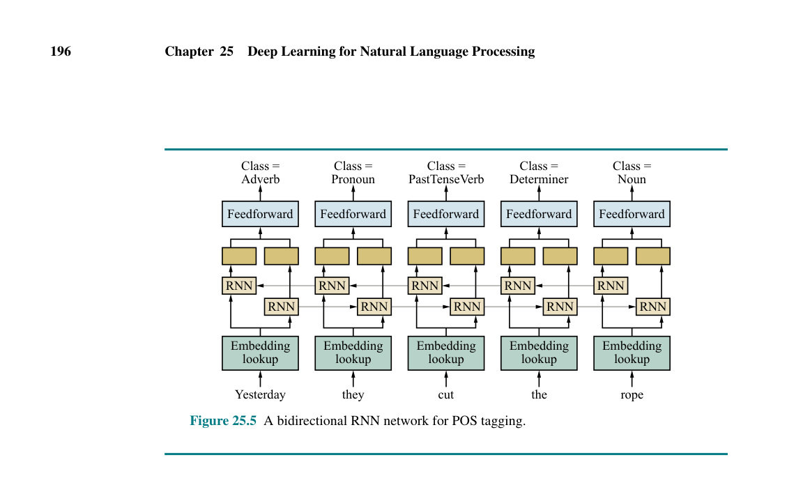
Trong trường hợp của RNN nhiều lớp, \(\mathbf{z}_t\) sẽ là vectơ ẩn của lớp cuối cùng. Đối với RNN hai chiều, \(\mathbf{z}_t\) thường được lấy làm sự nối ghép (concatenation) của các vectơ từ các mô hình trái-sang-phải và phải-sang-trái.
RNN cũng có thể được sử dụng cho các tác vụ phân loại cấp độ câu (hoặc cấp độ tài liệu), trong đó một đầu ra duy nhất xuất hiện ở cuối, thay vì có một luồng các đầu ra, mỗi đầu ra cho mỗi bước thời gian. Ví dụ trong phân tích cảm xúc (sentiment analysis), mục tiêu là phân loại một văn bản có cảm xúc Tích cực (Positive) hoặc Tiêu cực (Negative). Ví dụ: “This movie was poorly written and poorly acted” (Bộ phim này được viết và diễn xuất rất tệ) sẽ được phân loại là Tiêu cực. (Một số sơ đồ phân tích cảm xúc sử dụng nhiều hơn hai thể loại, hoặc sử dụng một giá trị vô hướng dạng số.)
Việc sử dụng RNN cho một tác vụ cấp độ câu phức tạp hơn một chút, vì chúng ta cần thu được một biểu diễn tổng hợp toàn câu, \(\mathbf{y}\), từ các đầu ra theo từng từ \(\mathbf{y}_t\) của RNN. Cách đơn giản nhất để làm điều này là sử dụng trạng thái ẩn RNN tương ứng với từ cuối cùng của đầu vào, vì RNN sẽ đọc toàn bộ câu tại bước thời gian đó. Tuy nhiên, điều này có thể ngầm làm chệch (bias) mô hình về việc chú ý nhiều hơn đến phần cuối của câu. Một kỹ thuật phổ biến khác là gộp (pool) tất cả các vectơ ẩn. Ví dụ, gộp trung bình (average pooling) tính giá trị trung bình theo từng phần tử (element-wise) trên tất cả các vectơ ẩn:
\[ \mathbf{\tilde{z}} = \frac{1}{s} \sum_{t=1}^{s} \mathbf{z}_t \]
Vectơ được gộp \(\mathbf{\tilde{z}}\) gồm \(d\) chiều sau đó có thể được đưa vào một hoặc nhiều lớp truyền thẳng trước khi được đưa vào lớp đầu ra.
Chúng ta đã nói rằng RNN đôi khi giải quyết vấn đề giới hạn ngữ cảnh. Về mặt lý thuyết, bất kỳ thông tin nào cũng có thể được truyền từ một lớp ẩn này sang lớp ẩn tiếp theo trong bất kỳ số bước thời gian nào. Nhưng trong thực tế, thông tin có thể bị mất hoặc bị bóp méo, giống hệt như trong trò chơi truyền tin (telephone), nơi người chơi xếp hàng và người chơi đầu tiên thì thầm một tin nhắn cho người thứ hai, người này lặp lại nó cho người thứ ba, và cứ thế dọc theo hàng. Thông thường, thông điệp được đưa ra ở cuối đã bị hỏng khá nhiều so với thông điệp gốc. Vấn đề này đối với RNN tương tự như bài toán suy giảm đạo hàm (vanishing gradient problem) mà chúng tôi đã mô tả ở trang 807, ngoại trừ việc chúng ta hiện đang xử lý các lớp theo thời gian thay vì các lớp sâu.
Trong Mục 22.6.2, chúng tôi đã giới thiệu mô hình bộ nhớ ngắn hạn dài (long short-term memory - LSTM). Đây là một loại RNN có các đơn vị cổng (gating units) không gặp phải vấn đề sao chép không hoàn hảo một thông điệp từ bước thời gian này sang bước thời gian tiếp theo. Thay vào đó, LSTM có thể chọn nhớ một số phần của đầu vào, sao chép nó sang bước thời gian tiếp theo và quên các phần khác. Xem xét một mô hình ngôn ngữ xử lý một văn bản chẳng hạn như
The athletes, who all won their local qualifiers and advanced to the finals in Tokyo, now ...
Tại thời điểm này, nếu chúng ta hỏi mô hình xem từ tiếp theo nào có xác suất xảy ra cao hơn, “compete” hay “competes”, chúng ta sẽ kỳ vọng nó chọn “compete” vì nó hòa hợp với chủ ngữ số nhiều “The athletes” (Các vận động viên). Một LSTM có thể học cách tạo ra một đặc trưng tiềm ẩn cho ngôi và số của chủ ngữ và sao chép đặc trưng đó về phía trước mà không bị thay đổi cho đến khi nó cần thiết để đưa ra một lựa chọn như thế này. Một RNN thông thường (hoặc một mô hình n-gram về vấn đề đó) thường bị nhầm lẫn trong các câu dài với nhiều từ xen giữa chủ ngữ và động từ.
Một trong những tác vụ được nghiên cứu rộng rãi nhất trong NLP là dịch máy hay MT (machine translation), trong đó mục tiêu là dịch một câu từ một ngôn ngữ nguồn (source language) sang một ngôn ngữ đích (target language)—ví dụ, từ tiếng Tây Ban Nha sang tiếng Anh. Chúng ta huấn luyện một mô hình MT với một kho ngữ liệu lớn gồm các cặp câu nguồn/đích. Mục tiêu sau đó là dịch chính xác các câu mới không có trong dữ liệu huấn luyện của chúng ta.
Chúng ta có thể sử dụng RNN để tạo ra một hệ thống MT không? Chúng Phần lớn chắc chắn có thể mã hóa câu nguồn bằng một RNN. Nếu có sự tương ứng một-một giữa các từ nguồn và từ đích, thì chúng ta có thể coi MT như một tác vụ gán nhãn đơn giản—với từ nguồn “perro” trong tiếng Tây Ban Nha, chúng ta gán nhãn cho nó là từ tiếng Anh tương ứng “dog”. Nhưng trên thực tế, các từ không phải là một-một: trong tiếng Tây Ban Nha, ba từ “caballo de mar” tương ứng với một từ tiếng Anh duy nhất là “seahorse” (cá ngựa), và hai từ “perro grande” dịch thành “big dog”, với thứ tự từ bị đảo ngược. Việc sắp xếp lại từ ngữ thậm chí có thể còn khắc nghiệt hơn; trong tiếng Anh, chủ ngữ thường đứng ở đầu câu, nhưng trong tiếng Fijian, chủ ngữ thường ở cuối. Vậy làm thế nào để chúng ta tạo ra một câu trong ngôn ngữ đích?
Có vẻ như chúng ta nên tạo ra từng từ một, nhưng theo dõi ngữ cảnh để chúng ta có thể nhớ các phần của nguồn chưa được dịch và theo dõi những gì đã được dịch để chúng ta không lặp lại chính mình. Cũng có vẻ như đối với một số câu,
Hình 25.5 Một mạng RNN hai chiều để gán nhãn POS.
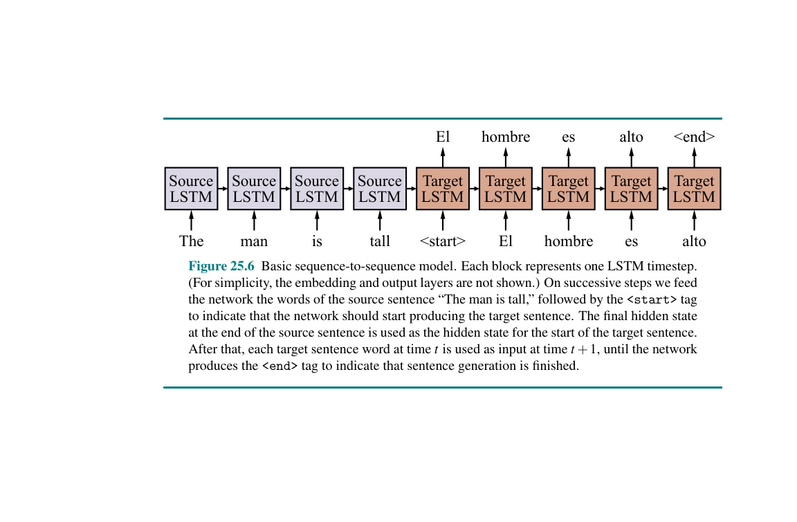
Hình 25.6 Mô hình chuỗi sang chuỗi cơ bản. Mỗi khối biểu diễn một bước thời gian LSTM. (Để đơn giản, các lớp nhúng và lớp đầu ra không được hiển thị.) Trên các bước liên tiếp, chúng ta đưa cho mạng các từ của câu nguồn “The man is tall”, theo sau là thẻ <start> để chỉ ra rằng mạng nên bắt đầu tạo câu đích. Trạng thái ẩn cuối cùng ở cuối câu nguồn được sử dụng làm trạng thái ẩn cho sự khởi đầu của câu đích. Sau đó, mỗi từ của câu đích tại thời điểm \(t\) được sử dụng làm đầu vào tại thời điểm \(t + 1\), cho đến khi mạng tạo ra thẻ <end> để chỉ ra rằng quá trình tạo câu đã hoàn tất.
chúng ta phải xử lý toàn bộ câu nguồn trước khi bắt đầu sinh ra câu đích. Nói cách khác, việc sinh ra mỗi từ đích là có điều kiện phụ thuộc vào toàn bộ câu nguồn và vào tất cả các từ đích đã được sinh ra trước đó.
Điều này đem lại cho việc sinh văn bản phục vụ dịch máy một sự kết nối chặt chẽ với một mô hình ngôn ngữ RNN tiêu chuẩn, như đã được mô tả trong Mục 25.2. Chắc chắn, nếu chúng ta đã huấn luyện một RNN trên văn bản tiếng Anh, nó sẽ có nhiều khả năng tạo ra "big dog" hơn là "dog big". Tuy nhiên, chúng ta không muốn tạo ra bất kỳ câu tiếng Anh ngẫu nhiên nào; chúng ta muốn tạo ra một câu đích tương ứng với câu nguồn. Cách đơn giản nhất để làm điều đó là sử dụng hai mạng RNN, một cho nguồn và một cho đích. Chúng ta chạy RNN nguồn trên câu nguồn và sau đó sử dụng trạng thái ẩn cuối cùng từ RNN nguồn làm trạng thái ẩn ban đầu cho RNN đích. Bằng cách này, mỗi từ đích được ngầm định coi là có điều kiện dựa trên cả toàn bộ câu nguồn và các từ đích trước đó.
Kiến trúc mạng nơ-ron này được gọi là một mô hình chuỗi sang chuỗi cơ bản (basic sequence-to-sequence model), một ví dụ về nó được thể hiện trong Hình 25.6. Các mô hình chuỗi sang chuỗi được sử dụng phổ biến nhất cho dịch máy, nhưng cũng có thể được sử dụng cho một số tác vụ khác, như tự động tạo chú thích văn bản từ một hình ảnh, hoặc tóm tắt: viết lại một văn bản dài thành một văn bản ngắn hơn mà vẫn giữ nguyên ý nghĩa.
Các mô hình chuỗi sang chuỗi cơ bản là một bước đột phá đáng kể trong NLP nói chung và dịch máy nói riêng. Theo Wu et al. (2016b), phương pháp này đã dẫn đến việc giảm 60% lỗi so với các phương pháp dịch máy trước đó. Nhưng các mô hình này mắc phải ba thiếu sót chính:
Sẽ ra sao nếu RNN đích được tạo điều kiện dựa trên tất cả các vectơ ẩn từ RNN nguồn, thay vì chỉ dựa vào vectơ cuối cùng? Điều này sẽ giảm bớt những hạn chế của thiên vị ngữ cảnh gần và giới hạn kích thước ngữ cảnh cố định, cho phép mô hình truy cập bất kỳ từ nào trước đó một cách tốt như nhau. Một cách để đạt được quyền truy cập này là ghép nối tất cả các vectơ ẩn của RNN nguồn. Tuy nhiên, điều này sẽ gây ra sự gia tăng khổng lồ về số lượng trọng số, đi kèm với sự gia tăng về thời gian tính toán và cũng có khả năng bị quá khớp. Thay vào đó, chúng ta có thể tận dụng thực tế là khi RNN đích đang tạo ra đích từng từ một, có khả năng chỉ một phần nhỏ của nguồn thực sự có liên quan đến mỗi từ đích.
Điều quan trọng là, RNN đích phải chú ý đến các phần khác nhau của nguồn cho mỗi từ. Giả sử một mạng được huấn luyện để dịch tiếng Anh sang tiếng Tây Ban Nha. Nó được cung cấp các từ “The front door is red” (Cánh cửa trước màu đỏ) theo sau là một điểm đánh dấu kết thúc câu, nghĩa là đã đến lúc bắt đầu xuất ra các từ tiếng Tây Ban Nha. Vì vậy, lý tưởng nhất là ban đầu nó nên chú ý đến từ “The” và tạo ra “La”, sau đó chú ý đến “door” và xuất ra “puerta”, v.v.
Chúng ta có thể chính thức hóa khái niệm này với một thành phần mạng nơ-ron được gọi là sự chú ý (attention), có thể được sử dụng để tạo ra một "bản tóm tắt dựa trên ngữ cảnh" của câu nguồn thành một biểu diễn có số chiều cố định. Vectơ ngữ cảnh \(\mathbf{c}_i\) chứa thông tin liên quan nhất để tạo ra từ đích tiếp theo, và sẽ được sử dụng làm đầu vào bổ sung cho RNN đích. Một mô hình chuỗi sang chuỗi sử dụng sự chú ý được gọi là một mô hình chuỗi sang chuỗi có sự chú ý (attentional sequence-to-sequence model). Nếu RNN đích tiêu chuẩn được viết là:
\[ \mathbf{h}_i = \text{RNN}(\mathbf{h}_{i-1}, \mathbf{x}_i), \]
RNN đích cho mô hình chuỗi sang chuỗi có sự chú ý có thể được viết là:
\[ \mathbf{h}_i = \text{RNN}(\mathbf{h}_{i-1}, [\mathbf{x}_i; \mathbf{c}_i]) \]
trong đó \([\mathbf{x}_i; \mathbf{c}_i]\) là sự nối ghép của đầu vào và các vectơ ngữ cảnh \(\mathbf{c}_i\), được định nghĩa là:
\(r_{ij} = \mathbf{h}_{i-1} \cdot \mathbf{s}_j\)
\(a_{ij} = e^{r_{ij}} / (\sum_{k} e^{r_{ik}})\)
\(\mathbf{c}_i = \sum_{j} a_{ij} \cdot \mathbf{s}_j\)
trong đó \(\mathbf{h}_{i-1}\) là vectơ RNN đích sẽ được sử dụng để dự đoán từ ở bước thời gian \(i\), và \(\mathbf{s}_j\) là đầu ra của vectơ RNN nguồn cho từ nguồn (hoặc bước thời gian) \(j\). Cả \(\mathbf{h}_{i-1}\) và \(\mathbf{s}_j\) đều là các vectơ \(d\) chiều, trong đó \(d\) là kích thước ẩn. Do đó, giá trị của \(r_{ij}\) là "điểm số chú ý" thô giữa trạng thái đích hiện tại và từ nguồn \(j\). Các điểm số này sau đó được chuẩn hóa thành một xác suất \(a_{ij}\) bằng cách sử dụng softmax trên tất cả các từ nguồn. Cuối cùng, các xác suất này được sử dụng để tạo ra trung bình có trọng số của các vectơ RNN nguồn, \(\mathbf{c}_i\) (một vectơ \(d\) chiều khác).
Một ví dụ về mô hình chuỗi sang chuỗi có sự chú ý được trình bày trong
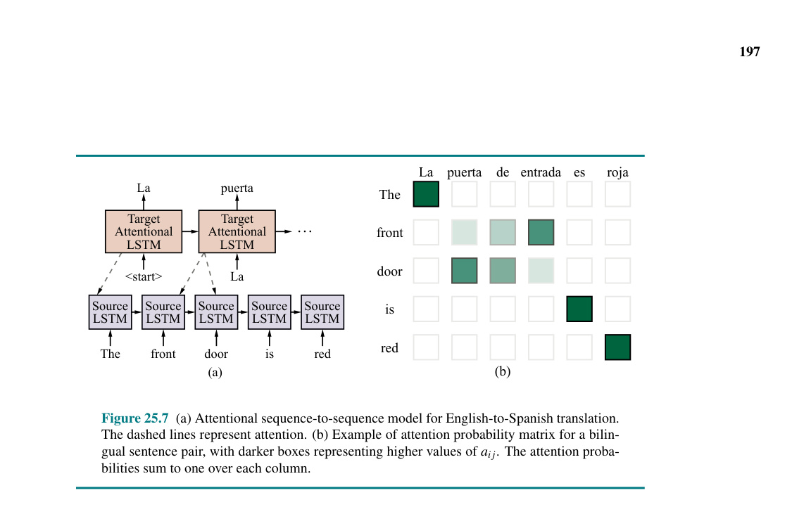
Sự công thức hóa xác suất softmax cho sự chú ý phục vụ ba mục đích. Thứ nhất, nó làm cho sự chú ý có thể lấy đạo hàm, điều này cần thiết để nó được sử dụng với lan truyền ngược (back-propagation). Mặc dù bản thân sự chú ý không có trọng số nào được học, các đạo hàm (gradients) vẫn luân chuyển ngược lại thông qua sự chú ý tới các RNN nguồn và đích. Thứ hai, việc công thức hóa xác suất cho phép mô hình nắm bắt được một số loại ngữ cảnh hóa khoảng cách xa mà RNN nguồn có thể chưa nắm bắt được, vì sự chú ý có thể xem xét toàn bộ chuỗi nguồn cùng một lúc, và học cách giữ lại những gì quan trọng và bỏ qua phần còn lại. Thứ ba, sự chú ý theo xác suất cho phép mạng biểu diễn sự không chắc chắn—nếu mạng không biết chính xác từ nguồn nào cần dịch tiếp theo, nó có thể phân bổ các xác suất chú ý lên một số tùy chọn, và sau đó thực sự chọn từ sử dụng RNN đích.
Không giống như hầu hết các thành phần của mạng nơ-ron, các xác suất chú ý thường có thể được con người giải thích và có ý nghĩa theo trực giác. Ví dụ, trong trường hợp dịch máy, các xác suất chú ý thường tương ứng với việc gióng hàng từng từ (word-to-word alignments) mà con người sẽ tạo ra. Điều này được thể hiện trong Hình 25.7(b).
Các mô hình chuỗi sang chuỗi phù hợp tự nhiên cho dịch máy, nhưng gần như bất kỳ tác vụ ngôn ngữ tự nhiên nào cũng có thể được mã hóa thành bài toán chuỗi sang chuỗi. Ví dụ, một hệ thống trả lời câu hỏi có thể được huấn luyện dựa trên đầu vào bao gồm một câu hỏi theo sau là một dấu phân cách rồi đến câu trả lời.
Tại thời điểm huấn luyện, một mô hình chuỗi sang chuỗi cố gắng tối đa hóa xác suất của mỗi từ trong câu đích huấn luyện, với điều kiện dựa trên nguồn và tất cả các từ đích trước đó. Một khi quá trình huấn luyện hoàn tất, chúng ta được cung cấp một câu nguồn và mục tiêu của chúng ta là tạo ra câu đích tương ứng. Như thể hiện trong Hình 25.7, chúng ta có thể tạo ra đích từng từ một, và sau đó cấp lại đầu vào là từ mà chúng ta vừa tạo ra ở bước thời gian tiếp theo. Thủ tục này được gọi là giải mã (decoding).
Dạng giải mã đơn giản nhất là chọn từ có xác suất cao nhất tại mỗi bước thời gian và sau đó đưa từ này làm đầu vào cho bước thời gian tiếp theo. Điều này được gọi là giải mã tham lam (greedy decoding) vì sau mỗi từ đích được sinh ra, hệ thống đã hoàn toàn cam kết với giả thuyết mà nó đã tạo ra cho đến nay. Vấn đề là mục tiêu của giải mã là tối đa hóa xác suất của toàn bộ chuỗi đích, điều mà giải mã tham lam có thể không đạt được. Ví dụ, hãy xem xét
Hình 25.7 (a) Mô hình chuỗi sang chuỗi có sự chú ý để dịch từ tiếng Anh sang tiếng Tây Ban Nha. Các đường đứt nét biểu thị sự chú ý. (b) Ví dụ về ma trận xác suất sự chú ý cho một cặp câu song ngữ, với các hộp sẫm màu hơn biểu thị giá trị \(a_{ij}\) cao hơn. Các xác suất sự chú ý có tổng bằng một trên mỗi cột.
việc sử dụng bộ giải mã tham lam để dịch câu tiếng Anh mà chúng ta đã thấy trước đó, "The front door is red", sang tiếng Tây Ban Nha.
Bản dịch chính xác là “La puerta de entrada es roja”—dịch theo nghĩa đen là “The door of entry is red” (Cánh cửa ra vào màu đỏ). Giả sử RNN đích tạo ra chính xác từ đầu tiên "La" cho "The". Tiếp theo, một bộ giải mã tham lam có thể đề xuất "entrada" cho "front". Nhưng đây là một lỗi—trật tự từ trong tiếng Tây Ban Nha phải đặt danh từ "puerta" trước từ bổ nghĩa. Giải mã tham lam thì nhanh—nó chỉ xem xét một lựa chọn tại mỗi bước thời gian và có thể làm như vậy một cách nhanh chóng—nhưng mô hình không có cơ chế để sửa lỗi.
Chúng ta có thể cố gắng cải thiện cơ chế chú ý để nó luôn chú ý đến đúng từ và đoán đúng mọi lúc. Nhưng đối với nhiều câu, thật không khả thi để đoán đúng tất cả các từ ở đầu câu cho đến khi bạn đã thấy những gì ở cuối.
Một cách tiếp cận tốt hơn là tìm kiếm một cách giải mã tối ưu (hoặc ít nhất là một cách tốt) bằng cách sử dụng một trong các thuật toán tìm kiếm từ Chương 3. Một lựa chọn phổ biến là tìm kiếm chùm tia (beam search) (xem Mục 4.1.3). Trong bối cảnh giải mã dịch máy, tìm kiếm chùm tia thường giữ lại \(k\) giả thuyết hàng đầu ở mỗi giai đoạn, mở rộng mỗi giả thuyết bằng một từ bằng cách sử dụng \(k\) lựa chọn từ hàng đầu, sau đó chọn \(k\) giả thuyết tốt nhất trong số \(k^2\) giả thuyết mới được tạo ra. Khi tất cả các giả thuyết trong chùm tia tạo ra token <end> đặc biệt, thuật toán sẽ xuất ra giả thuyết có điểm số cao nhất.
Một hình ảnh trực quan về tìm kiếm chùm tia được đưa ra trong
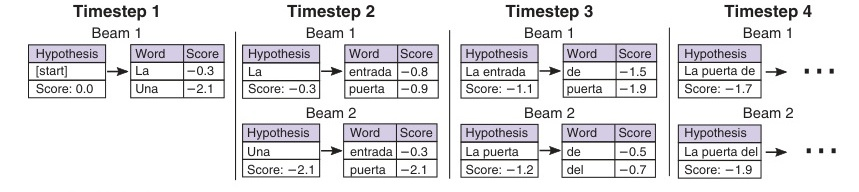
Bài báo có ảnh hưởng lớn “Attention is all you need” (Vaswani et al., 2018) đã giới thiệu kiến trúc transformer (transformer architecture), trong đó sử dụng một cơ chế tự chú ý (self-attention) có thể lập mô hình ngữ cảnh khoảng cách xa mà không bị phụ thuộc tuần tự.
Trước đây, trong các mô hình chuỗi sang chuỗi, sự chú ý được áp dụng từ RNN đích đến RNN nguồn. Tự chú ý mở rộng cơ chế này để mỗi chuỗi trạng thái ẩn cũng chú ý đến chính nó—nguồn với nguồn, và đích với đích. Điều này cho phép mô hình bổ sung thêm khả năng nắm bắt ngữ cảnh khoảng cách xa (và khoảng cách gần) trong mỗi chuỗi.
Cách đơn giản nhất để áp dụng tự chú ý là khi ma trận chú ý được hình thành trực tiếp bởi tích vô hướng (dot product) của các vectơ đầu vào. Tuy nhiên, điều này gây ra vấn đề. Tích vô hướng giữa một vectơ và chính nó sẽ luôn cao, vì vậy mỗi trạng thái ẩn sẽ có xu hướng chú ý nhiều vào chính nó. Transformer giải quyết vấn đề này bằng cách trước tiên chiếu đầu vào thành ba biểu diễn khác nhau bằng ba ma trận trọng số khác nhau:
Trong cơ chế chú ý tiêu chuẩn, các mạng khóa và giá trị là giống hệt nhau, nhưng theo trực giác thì điều hợp lý là chúng phải là các biểu diễn riêng biệt. Kết quả mã hóa của từ thứ \(i\), \(\mathbf{c}_i\), có thể được tính toán bằng cách áp dụng cơ chế chú ý cho các vectơ được chiếu:
\(r_{ij} = (\mathbf{q}_i \cdot \mathbf{k}_j) / \sqrt{d}\)
\(a_{ij} = e^{r_{ij}} / (\sum_{k} e^{r_{ik}})\)
\(\mathbf{c}_i = \sum_{j} a_{ij} \cdot \mathbf{v}_j\),
trong đó \(d\) là số chiều của \(\mathbf{k}\) và \(\mathbf{q}\). Lưu ý rằng \(i\) và \(j\) là các chỉ số trong cùng một câu, vì chúng ta đang mã hóa ngữ cảnh bằng tự chú ý. Trong mỗi lớp transformer, tự chú ý sử dụng các vectơ ẩn từ lớp trước đó, mà ban đầu chính là lớp nhúng.
Có một vài chi tiết đáng nói ở đây. Đầu tiên, cơ chế tự chú ý là không đối xứng, vì \(r_{ij}\) khác với \(r_{ji}\). Thứ hai, hệ số tỷ lệ \(\sqrt{d}\) được thêm vào để cải thiện độ ổn định số học. Thứ ba, việc mã hóa cho tất cả các từ trong một câu có thể được tính toán đồng thời, vì các phương trình trên có thể được biểu diễn bằng các phép toán ma trận có thể được tính toán hiệu quả song song trên phần cứng chuyên dụng hiện đại.
Sự lựa chọn nên sử dụng ngữ cảnh nào được học hoàn toàn từ các ví dụ huấn luyện, chứ không được chỉ định trước. Bản tóm tắt dựa trên ngữ cảnh, \(\mathbf{c}_i\), là tổng trên tất cả các vị trí trước đó trong câu. Về lý thuyết, bất kỳ thông tin nào từ câu cũng có thể xuất hiện trong \(\mathbf{c}_i\), nhưng trong thực tế, đôi khi những thông tin quan trọng bị mất, bởi vì về cơ bản nó được tính trung bình trên toàn bộ câu. Một cách để giải quyết vấn đề đó được gọi là chú ý đa đầu (multiheaded attention). Chúng ta chia câu thành \(m\) phần bằng nhau và áp dụng mô hình chú ý cho từng phần trong số \(m\) phần đó. Mỗi phần có tập hợp trọng số riêng của mình. Sau đó, kết quả được nối ghép lại với nhau để tạo thành \(\mathbf{c}_i\). Bằng cách nối ghép thay vì tính tổng, chúng ta giúp một thành phần phụ quan trọng dễ dàng nổi bật hơn.
Tự chú ý chỉ là một thành phần của mô hình transformer. Mỗi lớp transformer bao gồm một số lớp con (sub-layers). Ở mỗi lớp transformer, tự chú ý được áp dụng đầu tiên. Đầu ra của mô đun chú ý được đưa qua các lớp truyền thẳng (feedforward layers), trong đó các ma trận trọng số truyền thẳng tương tự được áp dụng độc lập ở mỗi vị trí. Một hàm kích hoạt phi tuyến tính, thường là ReLU, được áp dụng sau lớp truyền thẳng đầu tiên. Để giải quyết vấn đề suy giảm đạo hàm tiềm ẩn, hai kết nối thặng dư (residual connections) được thêm vào lớp transformer. Một transformer một lớp được thể hiện trong
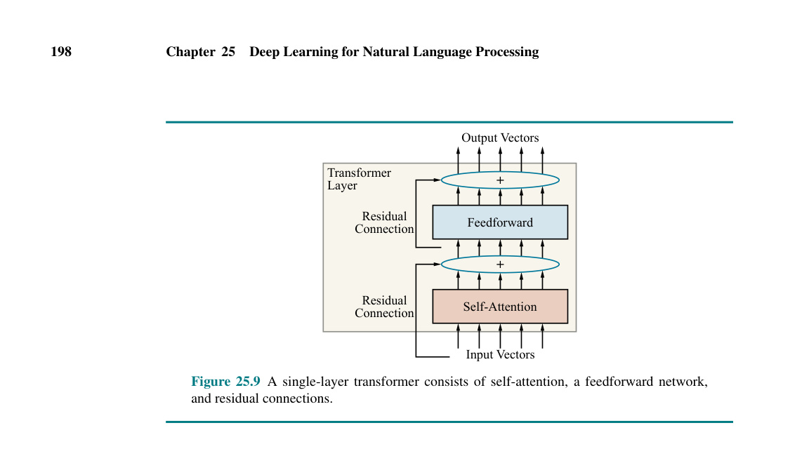
Hình 25.8 Tìm kiếm chùm tia (Beam search) với kích thước chùm \(b=2\). Điểm của mỗi từ là xác suất logarit do lớp softmax của RNN đích tạo ra, và điểm của mỗi giả thuyết là tổng điểm của các từ. Ở bước thời gian 3, giả thuyết có điểm cao nhất "La entrada" chỉ có thể tạo ra các phần tiếp theo có xác suất thấp, vì vậy nó bị "rơi khỏi chùm tia" (falls off the beam).
Hình 25.9 Một transformer một lớp bao gồm cơ chế tự chú ý, mạng truyền thẳng và các kết nối thặng dư.
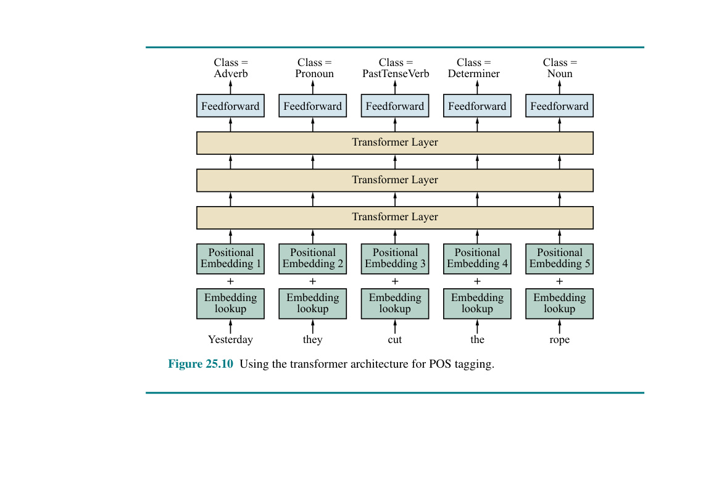
Hình 25.10 Sử dụng kiến trúc transformer cho việc gán nhãn từ loại (POS tagging).
có sáu lớp hoặc nhiều hơn. Giống như các mô hình khác mà chúng ta đã học, đầu ra của lớp \(i\) được sử dụng làm đầu vào cho lớp \(i+1\).
Kiến trúc transformer không nắm bắt rõ ràng thứ tự của các từ trong chuỗi, vì ngữ cảnh chỉ được lập mô hình thông qua tự chú ý, một cơ chế không biết đến trật tự từ. Để nắm bắt được thứ tự của các từ, transformer sử dụng một kỹ thuật gọi là nhúng vị trí (positional embedding). Nếu chuỗi đầu vào của chúng ta có độ dài tối đa là \(n\), thì chúng ta học \(n\) vectơ nhúng vị trí mới—một cho mỗi vị trí từ. Đầu vào cho lớp transformer đầu tiên là tổng của nhúng từ ở vị trí \(t\) cộng với nhúng vị trí tương ứng với vị trí \(t\).
Hình 25.10 minh họa kiến trúc transformer cho việc gán nhãn POS, áp dụng cho cùng một câu đã dùng trong Hình 25.3. Ở dưới cùng, nhúng từ và các nhúng vị trí được cộng lại để tạo thành đầu vào cho một transformer ba lớp. Transformer tạo ra một vectơ cho mỗi từ, giống như trong gán nhãn POS dựa trên RNN. Mỗi vectơ được đưa vào một lớp đầu ra cuối cùng và lớp softmax để tạo ra một phân phối xác suất trên các nhãn.
Trong phần này, chúng ta thực ra mới chỉ kể được một nửa câu chuyện về transformer: mô hình mà chúng ta mô tả ở đây được gọi là bộ mã hóa transformer (transformer encoder). Nó rất hữu ích cho các tác vụ phân loại văn bản. Kiến trúc transformer đầy đủ ban đầu được thiết kế như một mô hình chuỗi sang chuỗi cho dịch máy. Do đó, ngoài bộ mã hóa, nó cũng bao gồm một bộ giải mã transformer (transformer decoder). Bộ mã hóa và bộ giải mã gần như giống hệt nhau, ngoại trừ việc bộ giải mã sử dụng một phiên bản tự chú ý, trong đó mỗi từ chỉ có thể chú ý đến các từ trước nó, vì văn bản được sinh ra từ trái sang phải. Bộ giải mã cũng có một mô đun chú ý thứ hai ở mỗi lớp transformer có nhiệm vụ chú ý đến đầu ra của bộ mã hóa transformer.
Việc thu thập đủ dữ liệu để xây dựng một mô hình mạnh có thể là một thách thức. Trong thị giác máy tính (xem Chương 27), thách thức đó đã được giải quyết bằng cách tập hợp các bộ sưu tập hình ảnh lớn (như ImageNet) và dán nhãn thủ công cho chúng.
Đối với ngôn ngữ tự nhiên, việc làm việc với văn bản chưa gán nhãn phổ biến hơn. Sự khác biệt một phần là do khó khăn trong việc dán nhãn: một người lao động không có kỹ năng có thể dễ dàng dán nhãn một hình ảnh là "con mèo" hoặc "hoàng hôn", nhưng cần phải được đào tạo bài bản để chú thích một câu bằng các nhãn từ loại hoặc cây phân tích cú pháp. Sự khác biệt cũng là do sự phong phú của văn bản: Internet bổ sung thêm hơn 100 tỷ từ văn bản mỗi ngày, bao gồm sách đã được số hóa, các nguồn tài nguyên được tuyển chọn như Wikipedia, và các bài đăng trên mạng xã hội không qua kiểm duyệt.
Các dự án như Common Crawl cung cấp khả năng truy cập dễ dàng vào dữ liệu này. Bất kỳ văn bản chạy liên tục (running text) nào cũng có thể được sử dụng để xây dựng mô hình n-gram hoặc mô hình nhúng từ, và một số văn bản đi kèm với cấu trúc có thể hữu ích cho nhiều loại tác vụ—ví dụ, có nhiều trang FAQ (Câu hỏi thường gặp) với các cặp câu hỏi - câu trả lời có thể được sử dụng để huấn luyện hệ thống trả lời câu hỏi. Tương tự, nhiều trang web xuất bản các bản dịch song song của các văn bản, có thể được dùng để huấn luyện hệ thống dịch máy. Một số văn bản thậm chí đi kèm với các loại nhãn, chẳng hạn như các trang đánh giá nơi người dùng chú thích các đánh giá văn bản của họ bằng hệ thống xếp hạng 5 sao.
Chúng ta mong muốn không phải bận tâm việc tạo ra một tập dữ liệu mới mỗi khi chúng ta cần một mô hình NLP mới. Trong phần này, chúng tôi giới thiệu ý tưởng về tiền huấn luyện (pretraining): một dạng của học chuyển giao (xem Mục 22.7.2), trong đó chúng ta sử dụng một lượng lớn dữ liệu ngôn ngữ lĩnh vực chung dùng chung để huấn luyện phiên bản ban đầu của một mô hình NLP. Từ đó, chúng ta có thể sử dụng một lượng nhỏ hơn dữ liệu đặc thù của miền (có lẽ bao gồm cả một số dữ liệu đã gán nhãn) để tinh chỉnh (refine) mô hình. Mô hình được tinh chỉnh có thể học từ vựng, thành ngữ, cấu trúc cú pháp và các hiện tượng ngôn ngữ khác đặc trưng cho lĩnh vực mới.
Trong Mục 25.1, chúng ta đã giới thiệu ngắn gọn về nhúng từ. Chúng ta đã thấy các từ tương tự như "banana" và "apple" lại có được các vectơ tương tự nhau như thế nào, và chúng ta đã thấy rằng chúng ta có thể giải các bài toán loại suy bằng phép trừ vectơ. Điều này chỉ ra rằng nhúng từ đang nắm bắt được thông tin đáng kể về các từ.
Trong phần này, chúng ta sẽ đi sâu vào chi tiết về cách các nhúng từ được tạo ra bằng một quy trình hoàn toàn không có giám sát (unsupervised) trên một kho ngữ liệu văn bản lớn. Điều này trái ngược với các nhúng từ ở Mục 25.1, vốn được xây dựng trong quá trình gán nhãn từ loại có giám sát, và do đó đòi hỏi các nhãn POS có được từ việc chú thích thủ công tốn kém.
Chúng ta sẽ tập trung vào một mô hình cụ thể dành cho nhúng từ, mô hình GloVe (Global Vectors). Mô hình bắt đầu bằng cách thu thập số lần đếm về số lần mỗi từ xuất hiện trong một cửa sổ của từ khác, tương tự như mô hình skip-gram. Đầu tiên, chọn kích thước cửa sổ (có thể là 5 từ) và gọi \(X_{ij}\) là số lần các từ \(i\) và \(j\) cùng xuất hiện trong một cửa sổ, và gọi \(X_i\) là số lần từ \(i\) cùng xuất hiện với bất kỳ từ nào khác. Gọi \(P_{ij} = X_{ij} / X_i\) là xác suất mà từ \(j\) xuất hiện trong ngữ cảnh của từ \(i\). Giống như trước, gọi \(E_i\) là nhúng từ cho từ \(i\).
Một phần trực giác của mô hình GloVe là mối quan hệ giữa hai từ có thể được nắm bắt tốt nhất bằng cách so sánh cả hai với các từ khác. Hãy xem xét các từ "ice" (nước đá) và "steam" (hơi nước). Bây giờ hãy xem xét tỷ số xác suất xuất hiện cùng nhau của chúng với một từ khác, \(w\), tức là:
\[ P_{w,\text{ice}} / P_{w,\text{steam}} . \]
Khi \(w\) là từ "solid" (rắn), tỷ số này sẽ cao (nghĩa là "solid" áp dụng nhiều hơn cho "ice") và khi \(w\) là từ "gas" (khí), tỷ số này sẽ thấp (nghĩa là "gas" áp dụng nhiều hơn cho "steam"). Và khi \(w\) là một từ không mang ý nghĩa nội dung (non-content word) như "the", một từ như "water" (nước) có sự liên quan như nhau cho cả hai, hoặc một từ hoàn toàn không liên quan như "fashion" (thời trang), thì tỷ số sẽ gần bằng 1.
Mô hình GloVe bắt đầu với trực giác này và trải qua một số lập luận toán học (Pennington et al., 2014) biến đổi các tỷ số xác suất thành các khác biệt vectơ và tích vô hướng, cuối cùng đi đến ràng buộc:
\[ E_i \cdot E'_k = \log(P_{ik}). \]
Nói cách khác, tích vô hướng của hai vectơ từ bằng log xác suất cùng xuất hiện của chúng. Điều này hoàn toàn có ý nghĩa theo trực giác: hai vectơ gần như trực giao (nearly-orthogonal) có tích vô hướng gần bằng 0, và hai vectơ được chuẩn hóa gần như giống hệt nhau có tích vô hướng gần bằng 1. Có một sự phức tạp về mặt kỹ thuật trong đó mô hình GloVe tạo ra hai vectơ nhúng từ cho mỗi từ, \(E_i\) và \(E'_i\); việc tính toán cả hai và sau đó cộng chúng lại vào cuối giúp hạn chế quá khớp.
Việc huấn luyện một mô hình như GloVe thường ít tốn kém hơn nhiều so với việc huấn luyện một mạng nơ-ron tiêu chuẩn: một mô hình mới có thể được huấn luyện từ hàng tỷ từ văn bản trong một vài giờ bằng cách sử dụng một CPU máy tính để bàn tiêu chuẩn.
Hoàn toàn có thể huấn luyện nhúng từ trên một lĩnh vực cụ thể, và khôi phục kiến thức trong lĩnh vực đó. Ví dụ, Tshitoyan et al. (2019) đã sử dụng 3,3 triệu tóm tắt khoa học về chủ đề khoa học vật liệu để huấn luyện một mô hình nhúng từ. Họ nhận thấy rằng, giống như việc chúng ta đã thấy mô hình nhúng từ chung có thể trả lời câu hỏi “Athens đối với Hy Lạp cũng như Oslo đối với điều gì?” bằng câu trả lời là “Na Uy”, mô hình khoa học vật liệu của họ có thể trả lời “NiFe đối với ferromagnetic (vật liệu sắt từ) cũng như IrMn đối với điều gì?” bằng “antiferromagnetic” (vật liệu phản sắt từ).
Mô hình của họ không chỉ dựa vào sự xuất hiện cùng nhau của các từ; nó dường như đang nắm bắt những kiến thức khoa học phức tạp hơn. Khi được hỏi những hợp chất hóa học nào có thể được phân loại là “nhiệt điện” (thermoelectric) hoặc “chất cách điện tôpô” (topological insulator), mô hình của họ có thể trả lời một cách chính xác. Ví dụ, \(CsAgGa_2Se_4\) chưa bao giờ xuất hiện gần từ “nhiệt điện” trong kho ngữ liệu, nhưng nó xuất hiện gần các từ “chalcogenide” (chancogenua), “band gap” (vùng cấm), và “optoelectric” (quang điện), tất cả đều là những manh mối cho phép nó được phân loại là tương tự như “nhiệt điện”. Hơn nữa, khi chỉ được huấn luyện trên các tóm tắt cho đến năm 2008 và được yêu cầu chọn ra các hợp chất “nhiệt điện” nhưng chưa từng xuất hiện trong các tóm tắt, ba trong số năm lựa chọn hàng đầu của mô hình đã được phát hiện là có tính nhiệt điện trong các bài báo được công bố từ năm 2009 đến 2019.
Các nhúng từ là biểu diễn tốt hơn so với các token từ nguyên tử (atomic word tokens), nhưng có một vấn đề quan trọng với các từ đa nghĩa (polysemous words). Ví dụ, từ "rose" có thể chỉ một loài hoa hoặc quá khứ của từ "rise" (tăng lên). Do đó, chúng ta kỳ vọng tìm thấy ít nhất hai cụm ngữ cảnh từ hoàn toàn khác biệt cho "rose": một cụm giống với tên các loài hoa như "dahlia" (hoa thược dược) và một cụm giống với "upsurge" (sự tăng vọt). Không có vectơ nhúng đơn lẻ nào có thể nắm bắt cả hai ý nghĩa này cùng một lúc. "Rose" là một ví dụ rõ ràng về một từ có (ít nhất) hai ý nghĩa riêng biệt, nhưng những từ khác có những sắc thái ý nghĩa tinh tế phụ thuộc vào ngữ cảnh, chẳng hạn như từ "need" trong you need to see this movie (bạn cần xem bộ phim này) so với humans need oxygen to survive (con người cần oxy để tồn tại). Và một số cụm thành ngữ như break the bank sẽ được phân tích tốt hơn nếu xem xét như một tổng thể thay vì các từ thành phần.
Do đó, thay vì chỉ học một bảng chuyển đổi từ thành nhúng (word-to-embedding table), chúng ta muốn huấn luyện một mô hình để sinh ra các biểu diễn ngữ cảnh (contextual representations) cho mỗi từ trong một câu. Một biểu diễn ngữ cảnh sẽ ánh xạ cả một từ và ngữ cảnh xung quanh của các từ thành một vectơ nhúng từ. Nói cách khác, nếu chúng ta cung cấp cho mô hình này từ "rose" và ngữ cảnh the gardener planted a rose bush (người làm vườn đã trồng một bụi hoa hồng), nó sẽ sinh ra một nhúng ngữ cảnh tương tự (nhưng không nhất thiết phải giống hệt) với biểu diễn mà chúng ta có được với ngữ cảnh the cabbage rose had an unusual fragrance (hoa hồng cải bắp có một mùi hương lạ), và rất khác biệt với biểu diễn của "rose" trong ngữ cảnh the river rose five feet (nước sông đã dâng lên năm feet).
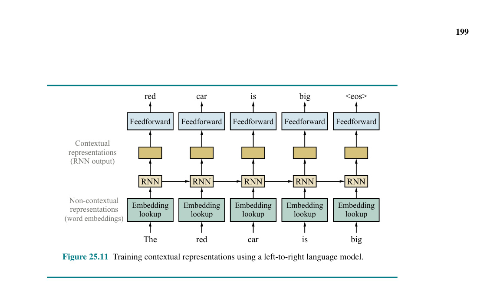
Hình 25.11 cho thấy một mạng hồi quy tạo ra các nhúng từ có ngữ cảnh—những hộp không có nhãn trong hình. Chúng ta giả định rằng chúng ta đã xây dựng được một tập hợp các nhúng từ phi ngữ cảnh. Chúng ta đưa vào mỗi lần một từ, và yêu cầu mô hình dự đoán từ tiếp theo. Chẳng hạn, trong hình vẽ, tại điểm chúng ta đã đi đến từ “car”, nút RNN tại bước thời gian đó sẽ nhận hai đầu vào: nhúng từ phi ngữ cảnh cho “car” và ngữ cảnh, cái mà mã hóa thông tin từ các từ trước đó “The red”. Sau đó, nút RNN sẽ xuất ra một biểu diễn ngữ cảnh cho “car”. Toàn bộ mạng sau đó sẽ đưa ra một dự đoán cho từ tiếp theo, “is”. Sau đó, chúng ta cập nhật trọng số của mạng để giảm thiểu sai số giữa dự đoán và từ tiếp theo thực tế.
Mô hình này tương tự như mô hình gán nhãn POS trong Hình 25.5, với hai sự khác biệt quan trọng. Thứ nhất, mô hình này là đơn hướng (trái-sang-phải), trong khi mô hình POS là hai chiều. Thứ hai, thay vì dự đoán các nhãn POS cho từ hiện tại, mô hình này dự đoán từ tiếp theo dựa vào ngữ cảnh trước đó. Một khi mô hình được xây dựng, chúng ta có thể sử dụng nó để trích xuất các biểu diễn cho các từ và chuyển chúng cho một số tác vụ khác; chúng ta không cần phải tiếp tục dự đoán từ tiếp theo. Lưu ý rằng việc tính toán một biểu diễn ngữ cảnh luôn yêu cầu hai đầu vào, từ hiện tại và ngữ cảnh.
Một điểm yếu của các mô hình ngôn ngữ tiêu chuẩn, chẳng hạn như mô hình n-gram, là việc ngữ cảnh hóa của mỗi từ chỉ dựa trên các từ đứng trước của câu. Các dự đoán được thực hiện từ trái sang phải. Nhưng đôi khi ngữ cảnh từ những phần sau của câu—ví dụ, từ "feet" trong cụm rose five feet—có thể giúp làm rõ nghĩa các từ phía trước.
Một cách giải quyết đơn giản là huấn luyện một mô hình ngôn ngữ phải-sang-trái riêng biệt, ngữ cảnh hóa mỗi từ dựa trên các từ tiếp theo trong câu, và sau đó nối ghép các biểu diễn trái-sang-phải và phải-sang-trái. Tuy nhiên, một mô hình như vậy thất bại trong việc kết hợp bằng chứng từ cả hai hướng.
Thay vào đó, chúng ta có thể sử dụng một mô hình ngôn ngữ bị che (masked language model - MLM). Các MLM được huấn luyện bằng cách che (ẩn) đi các từ riêng lẻ ở đầu vào và yêu cầu mô hình dự đoán các từ bị che. Đối với tác vụ này, người ta có thể sử dụng một RNN hai chiều sâu (deep bidirectional RNN) hoặc transformer áp dụng trên câu bị che. Ví dụ, cho một câu đầu vào “The river rose five feet”, chúng ta có thể che từ ở giữa để thu được “The river [bị che] five feet” và yêu cầu mô hình điền vào chỗ trống.
Các vectơ ẩn cuối cùng tương ứng với các token bị che sau đó được sử dụng để dự đoán các từ đã bị che—trong ví dụ này là "rose". Trong quá trình huấn luyện, một câu duy nhất có thể được sử dụng nhiều lần với các từ khác nhau bị che đi. Điểm tuyệt vời của phương pháp này là nó không yêu cầu dữ liệu được gán nhãn; bản thân câu cung cấp nhãn riêng cho từ bị che. Nếu mô hình này được huấn luyện trên một kho ngữ liệu văn bản lớn, nó sẽ tạo ra các biểu diễn tiền huấn luyện hoạt động tốt trên nhiều tác vụ NLP (dịch máy, trả lời câu hỏi, tóm tắt, đánh giá tính ngữ pháp, và các tác vụ khác).
Học sâu và học chuyển giao đã thúc đẩy đáng kể tình trạng hiện tại của NLP—đến mức một nhà bình luận vào năm 2018 đã tuyên bố rằng “khoảnh khắc ImageNet của NLP đã đến” (Ruder, 2018). Ngụ ý là giống như một bước ngoặt đã xảy ra vào năm 2012 đối với thị giác máy tính khi các hệ thống học sâu tạo ra kết quả tốt đáng kinh ngạc trong cuộc thi ImageNet, một bước ngoặt cũng đã xảy ra vào năm 2018 đối với NLP. Động lực chính cho bước ngoặt này là phát hiện ra rằng học chuyển giao hoạt động tốt đối với các bài toán ngôn ngữ tự nhiên: một mô hình ngôn ngữ chung có thể được tải xuống và tinh chỉnh cho một tác vụ cụ thể.
Nó bắt đầu với các nhúng từ đơn giản từ các hệ thống như WORD2VEC vào năm 2013 và GloVe vào năm 2014. Các nhà nghiên cứu có thể tải xuống một mô hình như vậy hoặc tự huấn luyện tương đối nhanh chóng mà không cần quyền truy cập vào siêu máy tính. Mặt khác, các biểu diễn ngữ cảnh được tiền huấn luyện tốn kém hơn nhiều bậc độ lớn để huấn luyện.
Các mô hình này chỉ trở nên khả thi sau khi những tiến bộ phần cứng (GPU và TPU) trở nên phổ biến, và trong trường hợp này, các nhà nghiên cứu rất biết ơn khi có thể tải xuống các mô hình thay vì phải tiêu tốn tài nguyên để tự huấn luyện. Mô hình transformer cho phép huấn luyện hiệu quả các mạng nơ-ron lớn hơn và sâu hơn nhiều so với khả năng trước đây (lần này là do những tiến bộ về phần mềm, chứ không phải phần cứng). Kể từ năm 2018, các dự án NLP mới thường bắt đầu bằng một mô hình transformer được tiền huấn luyện.
Mặc dù các mô hình transformer này được huấn luyện để dự đoán từ tiếp theo trong văn bản, chúng lại làm tốt một cách đáng ngạc nhiên trong các tác vụ ngôn ngữ khác. Một mô hình ROBERTA với một số tinh chỉnh
Hình 25.11 Huấn luyện các biểu diễn ngữ cảnh sử dụng một mô hình ngôn ngữ trái-sang-phải.
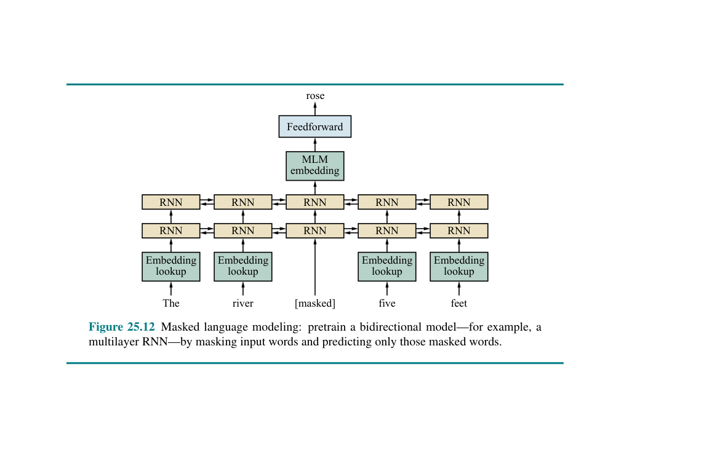
Hình 25.12 Mô hình hóa ngôn ngữ bị che (Masked language modeling): tiền huấn luyện một mô hình hai chiều—ví dụ, một RNN nhiều lớp—bằng cách che các từ đầu vào và chỉ dự đoán những từ bị che đó.
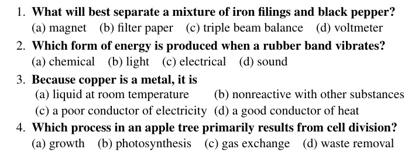
Hình 25.13 Các câu hỏi từ một bài kiểm tra khoa học lớp 8 mà hệ thống ARISTO có thể trả lời đúng bằng cách sử dụng một tổ hợp (ensemble) các phương pháp, trong đó có ảnh hưởng nhất là mô hình ngôn ngữ ROBERTA. Trả lời các câu hỏi này đòi hỏi kiến thức về ngôn ngữ tự nhiên, cấu trúc của bài kiểm tra trắc nghiệm, tri thức thông thường, và khoa học.
đạt được kết quả hiện đại nhất (state-of-the-art) trong các bài kiểm tra trả lời câu hỏi và đọc hiểu (Liu et al., 2019b). GPT-2, một mô hình ngôn ngữ giống transformer với 1,5 tỷ tham số được huấn luyện trên 40GB văn bản Internet, đạt kết quả tốt trong các tác vụ đa dạng như dịch giữa tiếng Pháp và tiếng Anh, tìm ra các tiền ngữ (referents) của các phụ thuộc khoảng cách xa, và trả lời câu hỏi kiến thức chung, tất cả đều không cần tinh chỉnh cho tác vụ cụ thể đó. Như
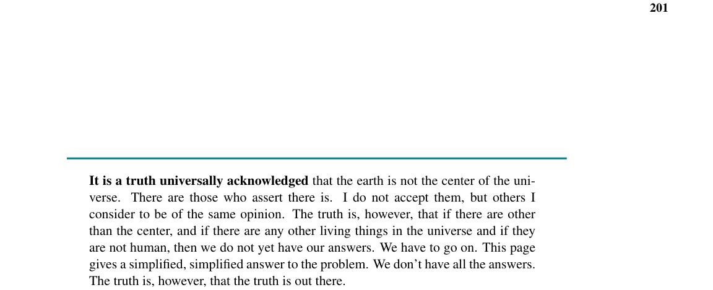
Là một ví dụ về một hệ thống NLP hiện đại, ARISTO (Clark et al., 2019) đã đạt được số điểm 91.6% trong một bài kiểm tra khoa học trắc nghiệm dành cho học sinh lớp 8 (xem Hình 25.13). ARISTO bao gồm một tập hợp các bộ giải (solvers): một số sử dụng truy xuất thông tin (tương tự như công cụ tìm kiếm trên web), một số thực hiện suy diễn văn bản (textual entailment) và lập luận định tính, và một số sử dụng các mô hình ngôn ngữ transformer lớn. Hóa ra chỉ riêng ROBERTA đã ghi được 88.2% trong bài kiểm tra. ARISTO cũng đạt được 83% trong bài kiểm tra cấp độ lớp 12 nâng cao hơn. (Điểm số 65% được coi là “đạt chuẩn” và 85% là “đạt chuẩn xuất sắc”.)
Có những giới hạn của ARISTO. Nó chỉ giải quyết các câu hỏi trắc nghiệm, không giải quyết các câu hỏi tự luận, và nó không thể đọc hay tạo ra các biểu đồ.1
T5 (Text-to-Text Transfer Transformer) được thiết kế để tạo ra các phản hồi văn bản cho nhiều loại đầu vào văn bản. Nó bao gồm một mô hình transformer bộ mã hóa–bộ giải mã tiêu chuẩn, được tiền huấn luyện trên 35 tỷ từ từ tập dữ liệu Colossal Clean Crawled Corpus (C4) nặng 750 GB. Việc huấn luyện không gán nhãn này được thiết kế để cung cấp cho mô hình kiến thức ngôn ngữ có thể tổng quát hóa, sẽ hữu ích cho nhiều tác vụ cụ thể. Sau đó, T5 được huấn luyện cho mỗi tác vụ với đầu vào bao gồm tên tác vụ, theo sau là dấu hai chấm và một số nội dung. Ví dụ, khi được yêu cầu “translate English to German: That is good”, nó tạo ra đầu ra là “Das ist gut”. Đối với một số tác vụ, đầu vào được đánh dấu (marked up); ví dụ trong Thử thách Lược đồ Winograd (Winograd Schema Challenge), đầu vào làm nổi bật một đại từ với một tiền ngữ mơ hồ. Với đầu vào “referent: The city councilmen refused the demonstrators a permit because they feared violence” (Tham chiếu: Các hội đồng thành phố từ chối cấp giấy phép cho những người biểu tình vì họ sợ bạo lực), câu trả lời đúng là “The city councilmen” (Các ủy viên hội đồng thành phố) (chứ không phải “những người biểu tình”).
Vẫn còn nhiều việc phải làm để cải thiện các hệ thống NLP. Một vấn đề là các mô hình transformer chỉ dựa vào một ngữ cảnh hẹp, giới hạn trong vài trăm từ. Một số cách tiếp cận thử nghiệm đang cố gắng mở rộng ngữ cảnh đó; hệ thống Reformer (Kitaev et al., 2020) có thể xử lý ngữ cảnh lên tới một triệu từ.
Các kết quả gần đây đã chỉ ra rằng việc sử dụng nhiều dữ liệu huấn luyện hơn sẽ mang lại các mô hình tốt hơn—ví dụ, ROBERTA đã đạt được kết quả tiên tiến nhất sau khi huấn luyện trên 2,2 nghìn tỷ từ. Nếu việc sử dụng nhiều dữ liệu văn bản hơn thì tốt hơn, điều gì sẽ xảy ra nếu chúng ta bao gồm các loại dữ liệu khác: cơ sở dữ liệu có cấu trúc, dữ liệu số, hình ảnh và video? Chúng ta sẽ cần một bước đột phá về tốc độ xử lý của phần cứng để huấn luyện trên một kho ngữ liệu video lớn, và chúng ta cũng có thể cần một vài đột phá trong AI.
Người đọc tò mò có thể tự hỏi tại sao chúng ta lại học về ngữ pháp, phân tích cú pháp và diễn giải ngữ nghĩa trong chương trước, chỉ để loại bỏ những khái niệm đó để ủng hộ cho các mô hình hoàn toàn dẫn dắt bởi dữ liệu (data-driven models) trong chương này? Hiện tại, câu trả lời đơn giản là các mô hình dẫn dắt bởi dữ liệu dễ phát triển và duy trì hơn, đồng thời ghi điểm tốt hơn trên các bài kiểm tra chuẩn (benchmarks), so với các hệ thống được xây dựng thủ công bằng một lượng nỗ lực hợp lý của con người với các phương pháp được mô tả trong Chương 24. Có thể các mô hình transformer và những họ hàng của chúng đang học các biểu diễn tiềm ẩn giúp nắm bắt cùng những ý tưởng cơ bản giống như ngữ pháp và thông tin ngữ nghĩa, hoặc có thể một điều gì đó hoàn toàn khác đang xảy ra bên trong những mô hình khổng lồ này; chúng ta đơn giản là không biết. Nhưng chúng ta biết chắc chắn rằng một hệ thống được huấn luyện bằng dữ liệu văn bản sẽ dễ duy trì và thích nghi với các miền (domains) mới và các ngôn ngữ tự nhiên mới hơn là một hệ thống dựa vào các đặc trưng được thiết kế thủ công.
Cũng có thể xảy ra trường hợp những đột phá trong tương lai về mô hình hóa ngữ nghĩa và ngữ pháp rõ ràng sẽ khiến con lắc quay ngược lại. Có lẽ khả năng cao hơn là sự xuất hiện của các phương pháp tiếp cận lai (hybrid approaches) kết hợp những khái niệm tốt nhất từ cả hai chương. Ví dụ, Kitaev và Klein (2018) đã sử dụng cơ chế chú ý để cải thiện bộ phân tích cú pháp thành phần truyền thống (constituency parser), đạt được kết quả tốt nhất từng được ghi nhận trên tập kiểm tra Penn Treebank. Tương tự, Ringgaard et al. (2017) chứng minh cách một bộ phân tích cú pháp phụ thuộc (dependency parser) có thể được cải thiện với các nhúng từ và một mạng nơ-ron hồi quy. Hệ thống SLING của họ, phân tích cú pháp trực tiếp thành biểu diễn khung ngữ nghĩa (semantic frame representation), làm giảm nhẹ vấn đề sai sót tích lũy trong hệ thống đường ống (pipeline system) truyền thống.
1 Người ta đã chỉ ra rằng trong một số bài thi trắc nghiệm, có thể đạt điểm cao ngay cả khi không nhìn vào câu hỏi, vì có các dấu hiệu cho thấy trong những câu trả lời sai (Gururangan et al., 2018). Điều đó dường như cũng đúng đối với bài trả lời câu hỏi trực quan (Chao et al., 2018).
Các điểm chính của chương này như sau:
Sự phân bố của các từ và cụm từ trong ngôn ngữ tự nhiên tuân theo Định luật Zipf (Zipf, 1935, 1949): tần số của từ phổ biến thứ \(n\) gần như tỷ lệ nghịch với \(n\). Điều đó có nghĩa là chúng ta gặp vấn đề về dữ liệu thưa thớt: ngay cả với hàng tỷ từ trong dữ liệu huấn luyện, chúng ta liên tục gặp phải các từ và cụm từ mới chưa từng thấy trước đây.
Sự tổng quát hóa (generalization) đối với các từ và cụm từ mới được hỗ trợ bởi các biểu diễn nắm bắt được ý tưởng cơ bản rằng các từ có ý nghĩa tương tự nhau sẽ xuất hiện trong các ngữ cảnh tương tự. Deerwester et al. (1990) đã chiếu các từ vào các vectơ số chiều thấp bằng cách phân rã (decomposing) ma trận đồng xuất hiện được tạo bởi các từ và các tài liệu mà từ đó xuất hiện. Một khả năng khác là coi các từ xung quanh—ví dụ, cửa sổ 5 từ—làm ngữ cảnh. Brown et al. (1992) đã nhóm các từ thành các cụm phân cấp (hierarchical clusters) theo ngữ cảnh bigram của các từ; điều này đã được chứng minh là hiệu quả cho các tác vụ như nhận dạng thực thể có tên (named entity recognition) (Turian et al., 2010). Hệ thống WORD2VEC (Mikolov et al., 2013) là minh chứng quan trọng đầu tiên về những ưu điểm của nhúng từ có được từ việc huấn luyện mạng nơ-ron. Các vectơ nhúng từ GloVe (Pennington et al., 2014) có được bằng cách thao tác trực tiếp trên ma trận đồng xuất hiện từ (word co-occurrence matrix) thu được từ hàng tỷ từ văn bản. Levy và Goldberg (2014) giải thích lý do và cách thức những nhúng từ này có thể nắm bắt được các quy luật ngôn ngữ.
Bengio et al. (2003) đã đi tiên phong trong việc sử dụng mạng nơ-ron cho các mô hình ngôn ngữ, đề xuất kết hợp “(1) một biểu diễn phân tán (distributed representation) cho mỗi từ cùng với (2) hàm xác suất cho các chuỗi từ, được biểu diễn dưới dạng các biểu diễn này.” Mikolov et al. (2010) đã chứng minh việc sử dụng RNNs để lập mô hình ngữ cảnh cục bộ trong các mô hình ngôn ngữ. Jozefowicz et al. (2016) đã cho thấy cách một RNN được huấn luyện trên một tỷ từ có thể vượt trội hơn các mô hình n-gram được tạo thủ công cẩn thận. Các biểu diễn ngữ cảnh cho từ được nhấn mạnh bởi Peters et al. (2018), những người đã gọi chúng là biểu diễn ELMO (Embeddings from Language Models).
Lưu ý rằng một số tác giả so sánh các mô hình ngôn ngữ bằng cách đo độ khó (perplexity) của chúng. Độ khó (Perplexity) của một phân phối xác suất là \(2^H\), trong đó \(H\) là entropy của phân phối (xem Mục 19.3.3). Một mô hình ngôn ngữ có độ khó thấp hơn sẽ là một mô hình tốt hơn, nếu các yếu tố khác như nhau. Nhưng trong thực tế, các yếu tố khác hiếm khi bằng nhau. Do đó, việc đo lường hiệu suất trên một tác vụ thực tế mang lại nhiều thông tin hơn là dựa vào độ khó.
Howard và Ruder (2018) mô tả khuôn khổ ULMFIT (Universal Language Model Fine-tuning), giúp cho việc tinh chỉnh (fine-tune) một mô hình ngôn ngữ đã được tiền huấn luyện trở nên dễ dàng hơn mà không cần một kho văn bản mục tiêu khổng lồ. Ruder et al. (2019) cung cấp một bài hướng dẫn về học chuyển giao cho NLP.
Mikolov et al. (2010) đã giới thiệu ý tưởng sử dụng RNNs cho NLP, và Sutskever et al. (2015) đã giới thiệu ý tưởng học chuỗi sang chuỗi với các mạng sâu. Zhu et al. (2017) và (Liu et al., 2018b) đã cho thấy một cách tiếp cận không có giám sát hoạt động hiệu quả, và giúp việc thu thập dữ liệu dễ dàng hơn nhiều. Người ta nhanh chóng phát hiện ra rằng những loại mô hình này có thể hoạt động tốt một cách đáng kinh ngạc ở nhiều tác vụ khác nhau, ví dụ, chú thích hình ảnh (image captioning) (Karpathy và Fei-Fei, 2015; Vinyals et al., 2017b).
Devlin et al. (2018) đã chứng minh rằng các mô hình transformer được tiền huấn luyện với mục tiêu lập mô hình ngôn ngữ bị che có thể được trực tiếp sử dụng cho nhiều tác vụ. Mô hình này được gọi là BERT (Bidirectional Encoder Representations from Transformers - Biểu diễn Bộ mã hóa Hai chiều từ Transformers). Các mô hình BERT tiền huấn luyện có thể được tinh chỉnh cho các miền và tác vụ cụ thể, bao gồm trả lời câu hỏi, nhận dạng thực thể có tên, phân loại văn bản, phân tích cảm xúc và suy diễn ngôn ngữ tự nhiên (natural language inference).
Hệ thống XLNET (Yang et al., 2019) cải thiện BERT bằng cách loại bỏ sự không nhất quán giữa giai đoạn tiền huấn luyện và tinh chỉnh. Khuôn khổ ERNIE 2.0 (Sun et al., 2019) khai thác nhiều hơn từ dữ liệu huấn luyện bằng cách xem xét thứ tự câu và sự hiện diện của các thực thể có tên, chứ không chỉ là sự xuất hiện cùng nhau của các từ, và đã được chứng minh là vượt trội hơn BERT và XLNET. Đáp lại, các nhà nghiên cứu đã xem xét lại và cải thiện BERT: hệ thống ROBERTA (Liu et al., 2019b) sử dụng nhiều dữ liệu hơn cùng các siêu tham số và quy trình huấn luyện khác nhau, và nhận thấy rằng nó có thể sánh ngang với XLNET. Hệ thống Reformer (Kitaev et al., 2020) mở rộng phạm vi ngữ cảnh có thể xem xét lên đến một triệu từ. Trong khi đó, ALBERT (A Lite BERT) lại đi theo hướng ngược lại, giảm số lượng tham số từ 108 triệu xuống 12 triệu (để phù hợp với thiết bị di động) trong khi vẫn duy trì độ chính xác cao.
Hệ thống XLM (Lample và Conneau, 2019) là một mô hình transformer với dữ liệu huấn luyện từ nhiều ngôn ngữ. Điều này hữu ích cho dịch máy, nhưng cũng cung cấp các biểu diễn mạnh mẽ hơn cho các tác vụ đơn ngữ. Hai hệ thống quan trọng khác, GPT-2 (Radford et al., 2019) và T5 (Raffel et al., 2019), đã được mô tả trong chương này. Bài báo sau này cũng đã giới thiệu tập dữ liệu Colossal Clean Crawled Corpus (C4) gồm 35 tỷ từ.
Nhiều cải tiến hứa hẹn trên các thuật toán tiền huấn luyện đã được đề xuất (Yang et al., 2019; Liu et al., 2019b). Các mô hình ngữ cảnh tiền huấn luyện được mô tả bởi Peters et al. (2018) và Dai và Le (2016).
Đánh giá sự Hiểu Ngôn ngữ Chung (General Language Understanding Evaluation - GLUE) benchmark, một tập hợp các bài kiểm tra và công cụ để đánh giá các hệ thống NLP, đã được Wang et al. (2018a) giới thiệu. Các tác vụ bao gồm trả lời câu hỏi, phân tích cảm xúc, suy diễn văn bản, dịch thuật và phân tích cú pháp. Các mô hình Transformer đã thống trị bảng xếp hạng (mức chuẩn của con người bị bỏ lại rất xa)
Hình 25.14 Các ví dụ văn bản hoàn thành được tạo ra bởi mô hình ngôn ngữ GPT-2, với các câu nhắc in đậm. Hầu hết các đoạn văn bản đều bằng tiếng Anh khá trôi chảy, ít nhất là ở phạm vi cục bộ. Ví dụ cuối cùng chứng minh rằng đôi khi mô hình vẫn gặp sự cố.
xuống tận vị trí thứ chín) đến nỗi một phiên bản mới, SUPERGLUE (Wang et al., 2019), đã được giới thiệu với các tác vụ được thiết kế khó hơn đối với máy tính, nhưng vẫn dễ dàng với con người.
Vào cuối năm 2019, T5 là hệ thống dẫn đầu tổng thể với số điểm 89.3, chỉ thấp hơn nửa điểm so với mức chuẩn của con người là 89.8. Trên ba trong mười tác vụ, T5 thực sự vượt qua hiệu suất của con người: trả lời câu hỏi có/không (chẳng hạn như “Pháp có cùng múi giờ với Vương quốc Anh không?”) và hai tác vụ đọc hiểu liên quan đến việc trả lời câu hỏi sau khi đọc một đoạn văn hoặc một bài báo.
Dịch máy là một ứng dụng lớn của các mô hình ngôn ngữ. Năm 1933, Petr Troyanskii đã nhận được bằng sáng chế cho một “cỗ máy dịch thuật”, nhưng không có máy tính nào khả dụng để thực hiện các ý tưởng của ông. Năm 1947, Warren Weaver, dựa trên công trình về mật mã học và lý thuyết thông tin, đã viết cho Norbert Wiener: “Khi tôi nhìn vào một bài báo bằng tiếng Nga, tôi nói: ‘Thực ra nó được viết bằng tiếng Anh, nhưng đã được mã hóa bằng những ký hiệu kỳ lạ. Bây giờ tôi sẽ tiến hành giải mã.’” Cộng đồng sau đó đã cố gắng tiến hành giải mã theo cách này, nhưng họ không có đủ dữ liệu và tài nguyên tính toán để làm cho phương pháp này trở nên thực tế.
Vào những năm 1970, điều đó bắt đầu thay đổi, và hệ thống SYSTRAN (Toma, 1977) là hệ thống dịch máy thành công về mặt thương mại đầu tiên. SYSTRAN dựa vào các quy tắc từ vựng và ngữ pháp được tạo thủ công bởi các nhà ngôn ngữ học cũng như dữ liệu huấn luyện. Vào những năm 1980, cộng đồng nắm lấy các mô hình hoàn toàn thống kê dựa trên tần suất của các từ và cụm từ (Brown et al., 1988; Koehn, 2009). Khi tập huấn luyện đạt đến hàng tỷ hoặc hàng nghìn tỷ token (Brants et al., 2007), điều này mang lại các hệ thống tạo ra kết quả có thể hiểu được nhưng không trôi chảy (Och và Ney, 2004; Zollmann et al., 2008). Och và Ney (2002) cho thấy cách huấn luyện phân biệt (discriminative training) đã dẫn đến một bước tiến trong dịch máy vào đầu những năm 2000.
Sutskever et al. (2015) lần đầu tiên chỉ ra rằng có thể học một mô hình nơ-ron chuỗi sang chuỗi đầu cuối (end-to-end) cho dịch máy. Bahdanau et al. (2015) đã chứng minh ưu điểm của một mô hình học đồng thời cách gióng hàng các câu trong ngôn ngữ nguồn và ngôn ngữ đích và cách dịch giữa các ngôn ngữ. Vaswani et al. (2018) đã cho thấy các hệ thống dịch máy nơ-ron có thể được cải thiện hơn nữa bằng cách thay thế LSTMs bằng các kiến trúc transformer, những kiến trúc sử dụng cơ chế chú ý để nắm bắt ngữ cảnh. Những hệ thống dịch thuật nơ-ron này nhanh chóng vượt qua các phương pháp thống kê dựa trên cụm từ, và kiến trúc transformer ngay sau đó đã lan sang các tác vụ NLP khác.
Nghiên cứu về trả lời câu hỏi được tạo điều kiện thuận lợi nhờ việc tạo ra SQUAD, tập dữ liệu quy mô lớn đầu tiên để huấn luyện và kiểm tra các hệ thống trả lời câu hỏi (Rajpurkar et al., 2016). Kể từ đó, một số mô hình học sâu đã được phát triển cho tác vụ này (Seo et al., 2017; Keskar et al., 2019). Hệ thống ARISTO (Clark et al., 2019) sử dụng học sâu kết hợp với một tổ hợp các chiến thuật khác. Từ năm 2018, phần lớn các mô hình trả lời câu hỏi sử dụng các biểu diễn ngôn ngữ tiền huấn luyện, dẫn đến một sự cải thiện đáng chú ý so với các hệ thống trước đó.
Suy diễn ngôn ngữ tự nhiên (Natural language inference) là tác vụ đánh giá xem liệu một giả thuyết (chó cần ăn) có được kéo theo bởi một tiền đề (tất cả động vật đều cần ăn) hay không. Tác vụ này được phổ biến bởi Thử thách PASCAL (Dagan et al., 2005). Các tập dữ liệu quy mô lớn hiện đã có sẵn (Bowman et al., 2015; Williams et al., 2018). Các hệ thống dựa trên các mô hình tiền huấn luyện như ELMO và BERT hiện đang cung cấp hiệu suất tốt nhất trong các tác vụ suy diễn ngôn ngữ.
Hội nghị về Học Ngôn ngữ Tự nhiên Tính toán (Conference on Computational Natural Language Learning - CoNLL) tập trung vào học máy cho NLP. Tất cả các hội nghị và tạp chí được đề cập trong Chương 24 hiện nay đều bao gồm các bài báo về học sâu, vốn hiện đang giữ một vị trí thống trị trong lĩnh vực NLP.